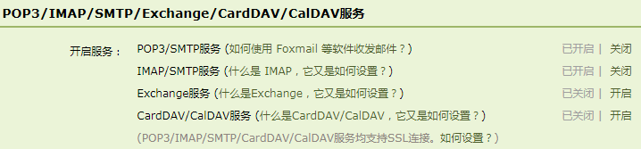

monit报警邮件配置闭坑
Oct 17, 2018 5:30·228 words ·1 minutes read
monit报警邮件配置
monit配置报警邮件， 现在以qq smtp服务为例。
根据官方文档配置mailserver
set mailserver smtp.qq.com port xx
username "qq号" password "不是密码是授权码"
using SSL
配置mail-format
set mail-format {
from: 454648xx@qq.com
subject: monit alert -- $EVENT
message: Date: $DATE
Description: $DESCRIPTION
}
<<<<<<< Updated upstream
配置邮件接收者
set alert xxxxxx@qq.com
发现启动monit后eventqueue有日志但是没有收到邮件！ 百思不得其解！！
原来是因为：
随着网络上垃圾邮件的泛滥,越来越多的免费电子邮箱服务商对邮箱的安全策略进行了提升,有多种不同的方式,最常见的就是开启的SMTP授权功能
=======配置邮件接收者
set alert 406507715@qq.com
发现启动monit后eventqueue有日志但是没有收到邮件！ 百思不得其解！！
原来是因为：
- 随着网络上垃圾邮件的泛滥,越来越多的免费电子邮箱服务商对邮箱的安全策略进行了提升,有多种不同的方式,最常见的就是开启的SMTP授权功能 *
所以需要在qq邮箱里面开启SMTP服务，得到授权码。

接收邮件服务器：imap.qq.com，使用SSL，端口号993
发送邮件服务器：smtp.qq.com，使用SSL，端口号465或587